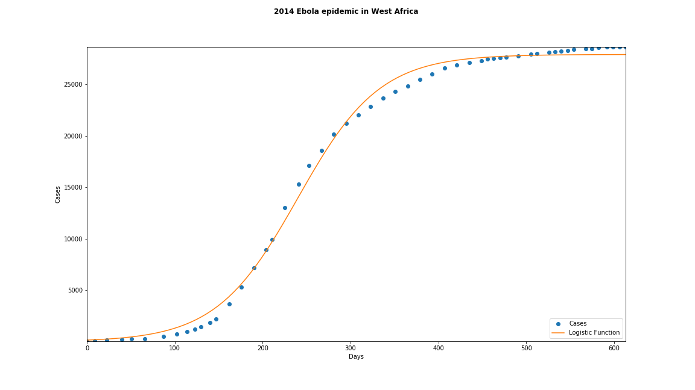
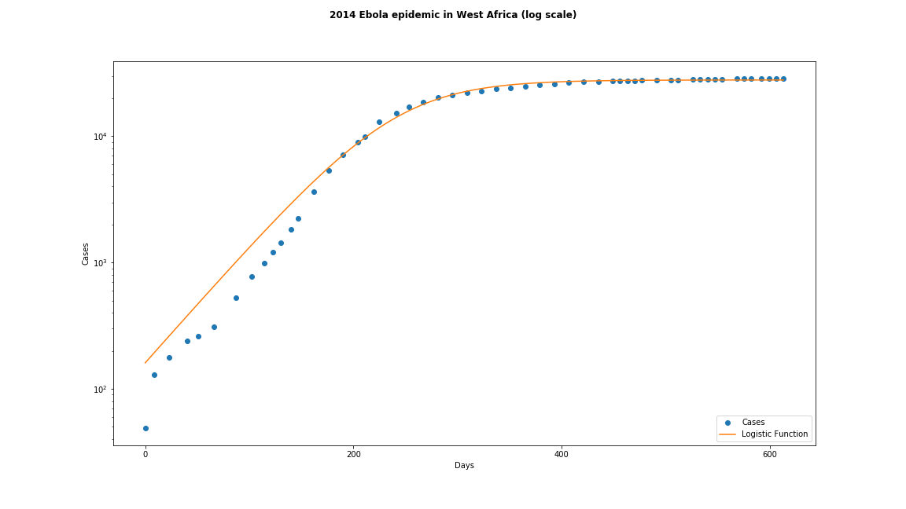

search
Search
Python notebook using data from 2014 West African Ebola virus epidemic timeline · 95 views · 2mo ago·data visualization, tutorial
This Notebook has been released under the Apache 2.0 open source license.
Loading...

Succeeded
True
Exit Code
0
Docker Image Name
Timeout Exceeded
False
Run Time
9.6 seconds
Queue Time
0 seconds
Output Size
0
Used All Space
False
Failure Message
TimeLine #Log Message
1.7s1[NbConvertApp] Converting notebook __notebook__.ipynb to notebook
4.3s2[NbConvertApp] Executing notebook with kernel: python3
7.8s3[NbConvertApp] Writing 74771 bytes to __notebook__.ipynb
8.7s4[NbConvertApp] Converting notebook __notebook__.ipynb to html
9.4s5[NbConvertApp] Support files will be in __results___files/
9.4s6[NbConvertApp] Making directory __results___files
9.4s7[NbConvertApp] Making directory __results___files
9.4s8[NbConvertApp] Writing 287324 bytes to __results__.html
9.4s9
9.4s11Complete. Exited with code 0.
Comments (0)